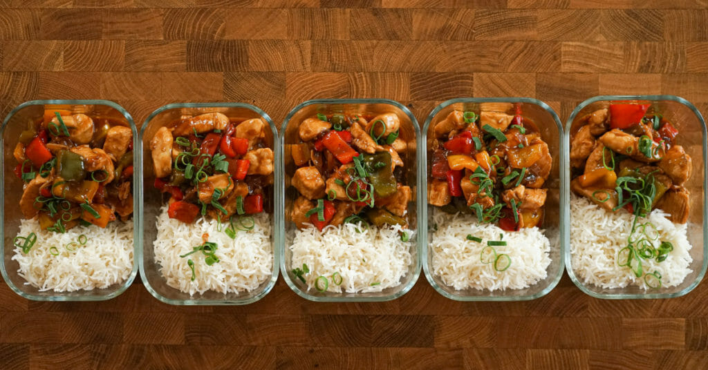

Sweet Sour Chicken

Delicious, Easy To Make Sweet and Sour Chicken Meal Prep
Prepare your week or weeks ahead with this easy-to-make sweet and sour chicken. It’s easy to make, cheap and tastes delicious. All of the nutrition/macro values are included in the recipe so that you know exactly what you’re eating and monitoring it correctly. Any additional information is also included in the video below. Please enjoy.
Ingredients
- Sweet and Sour Sauce
- ½ Cup (125ml) - Light Soy Sauce
- ⅓ Cup (80ml) - Pineapple Juice
- 4 Tbsp Tbsp (80g) - Honey
- 2 Tbsp (40ml) - Worcestershire Sauce
- 2 Tbsp (40g) - Apple Cider Vinegar
- 2 Tbsp (40g) - Tomato Ketchup
- 2 Tbsp (12g) - Tbsp Corn Flour or Corn Starch
- 4 - Garlic Cloves, Minced
- 15g (0.53oz) - Ginger, Peeled & Minced
- Sweet and Sour Chicken
- 2 ½ Tbsp (50ml) - Grapeseed Oil, Divided
- 1.4kg (3.09lbs) - Chicken Breast or Thigh, Diced
- 3 - Bell Peppers (Capsicums), Large Diced (Any Colour Is Fine)
- 1 - Brown (Yellow) Onion, Sliced
- Seasoning To Taste
- Rice
- 300g (10.58oz) - Basmati Rice, Washed
- 600g (600ml) - Cold Water
- Salt To Taste
Instructions
- Slice the chicken breast into even-sized diced pieces. Slice and dice the bell peppers (capsicums), slice the onion and grate the garlic and ginger. Add the bell peppers and onion together.
- In a bowl, add all the sauce ingredients and whisk. Set aside.
- Add the oil to a large pan or wok over medium-high heat, add in the oil and fry the bell pepper and onion mix for 4 minutes or until soft. Remove from the pan.
- Place the same pan back over medium-high, add in the oil and fry the chicken for 4-5 minutes or until lightly golden. Add in vegetables and mix well.
- Add in the sweet and sour sauce, mix well, bring to a simmer and cook for 2 minutes or until thick. Sprinkle over sesame seeds (optional), check seasoning and remove from heat. Portion into airtight containers. Dig in.
Basmati Rice
- Place the rice, water and salt to taste in a saucepan over high heat. Bring it to a boil, cover, reduce the heat to low and cook for 12 minutes. Turn off the heat, leave the lid on for 4 minutes, then fluff with a fork or spatula.